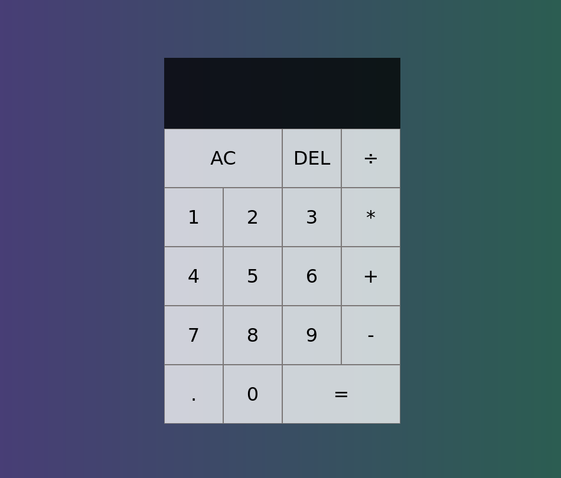

@nick._.linhares
-

Calculadora
Este projeto é uma calculadora que foi desenvolvida usando tecnologias web, incluindo HTML, CSS e JavaScript. Essa calculadora é capaz de realizar operações matemáticas simples, como adição, subtração, multiplicação e divisão. O projeto foi criado pelo autor e está disponível no GitHub. Além disso, foi configurado um sistema de integração contínua e implantação contínua (CI/CD) para automatizar o processo de atualização e implantação do código.
Acessar